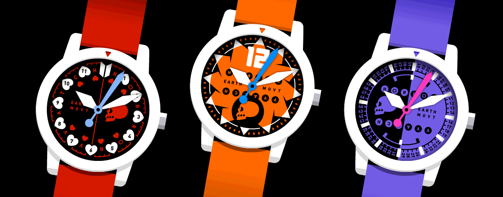
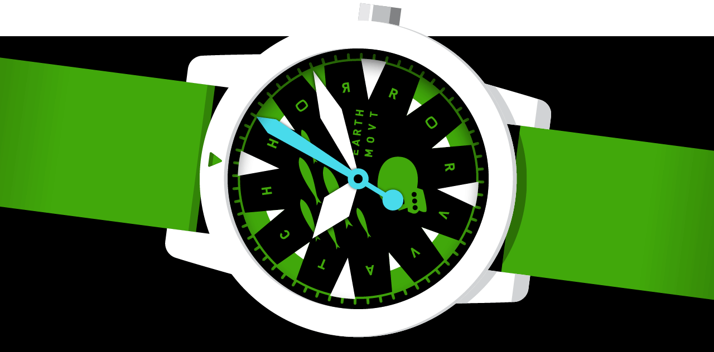
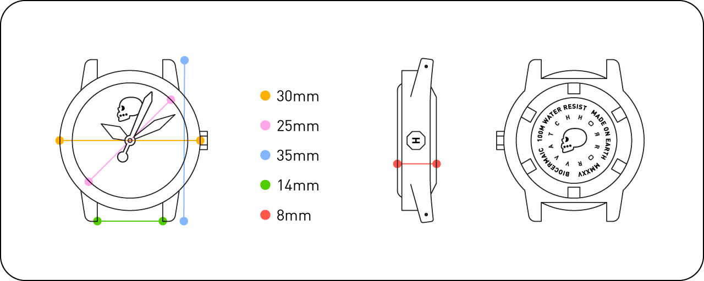

|
 The HORROR VVATCH Bambino is the 30mm littler sibling of the Prime. Smaller, lighter, leaner, but no less a visual overload. The Bambino is a unisex watch perfectly proportioned for the smallest of wrists: petites, youngsters, jockeys, miners whom Tolkien lamented tended to dig too deeply, et al. A big wrist can enjoy a Bambino as well, but if you feel it looks too small on you, strap on two more. Three more, even.  Each VVATCH Bambino features:
♦ bioceramic case With its lightweight bioceramic case, the Bambino feels barely there, making it comfortable for prolonged wear. Days... weeks... YEARS. Yet, it's no less durable. You'll love your Bambino, and your Bambino will love you back.

© MMXXV HORROR VVORKS Inc
|